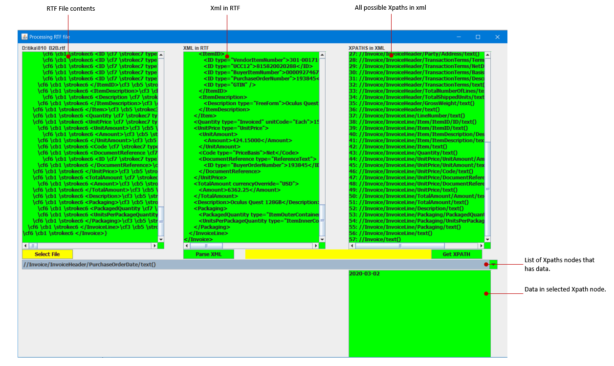

15. Extracting Information from XML files
-
-
Cover Page
15. Extracting Information from XML files
Date : 28-September-2020
-
1. Introduction
Introduction : The goal of this topic is to parse the XML Document and identify all the nodes and the data on that node.
XML is a software- and hardware-independent tool for storing and transporting data.
What is XML?
1.XML stands for eXtensible Markup Language
2.XML is a markup language much like HTML
3.XML was designed to store and transport data
4.XML was designed to be self-descriptive
5.XML is a W3C Recommendation
6.XML is just information wrapped in tags.
-
2. Steps to extract information from XML
In this topic we have XML data saved as RTF file format. So we need to use the RTF Reader to read the RTF file. Following are steps to extract information from XML:
1. First RTF file is selected from local drive to open.
2. To read the selected RTF file we are using rtfparserkit.
3. After we read the RTF file into String, parse the string to get all unique XPaths.
4. Check each XML path if it has data in it. If data exists then add this XPath into display list.
5. Display All paths in the list.
6. Select a path and display the data in the selected XPath.
Following jar files are used for reading RTF file contents :
rtfparserkit.jar
Following jar files are used for all XML related operations:
w3c-dom.jar
javax.xml-1.3.4.jar
-
3. Form Interface
Following image shows the form interface of XML data extraction.

-
4. Components of XML extraction program
RTF file reader program
A. readRtf.java
1. Display Form Interface
2. Read contents of RTF file (using rtfparserkit.jar)
3. Call xmlParser and xmlParserHandler to process XML (using javax.xml-1.3.4.jar, w3c-dom.jar)
Sax XML parser program
B. xmlParser.java (using javax.xml-1.3.4.jar, w3c-dom.jar)
C. xmlParserHandler.java. (using javax.xml-1.3.4.jar, w3c-dom.jar)
Following image shows external Jar files referenced for parsing XML from RTF file:

-
5. Downloads
1. xmlParsersFromRTFModules.7z : Zip file containing java modules to extract information from XML in RTF files.
(readRtf.java, xmlParser.java, xmlParserHandler.java, javax.xml-1.3.4.jar, w3c-dom.jar, rtfparserkit.jar)